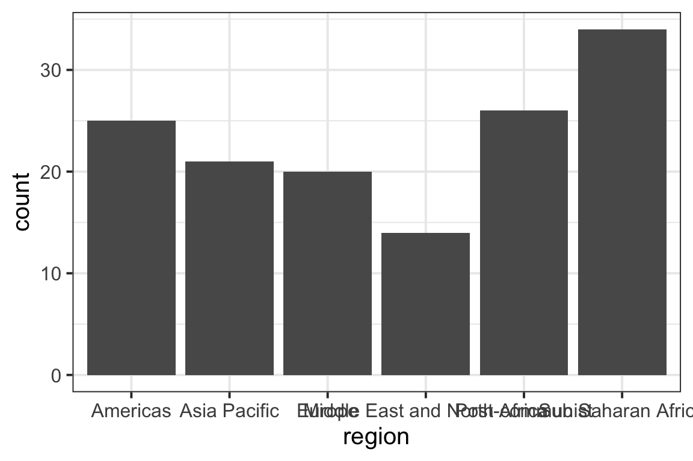
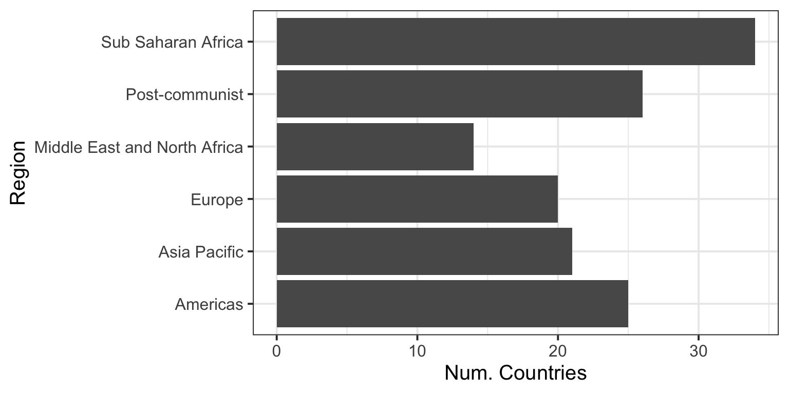
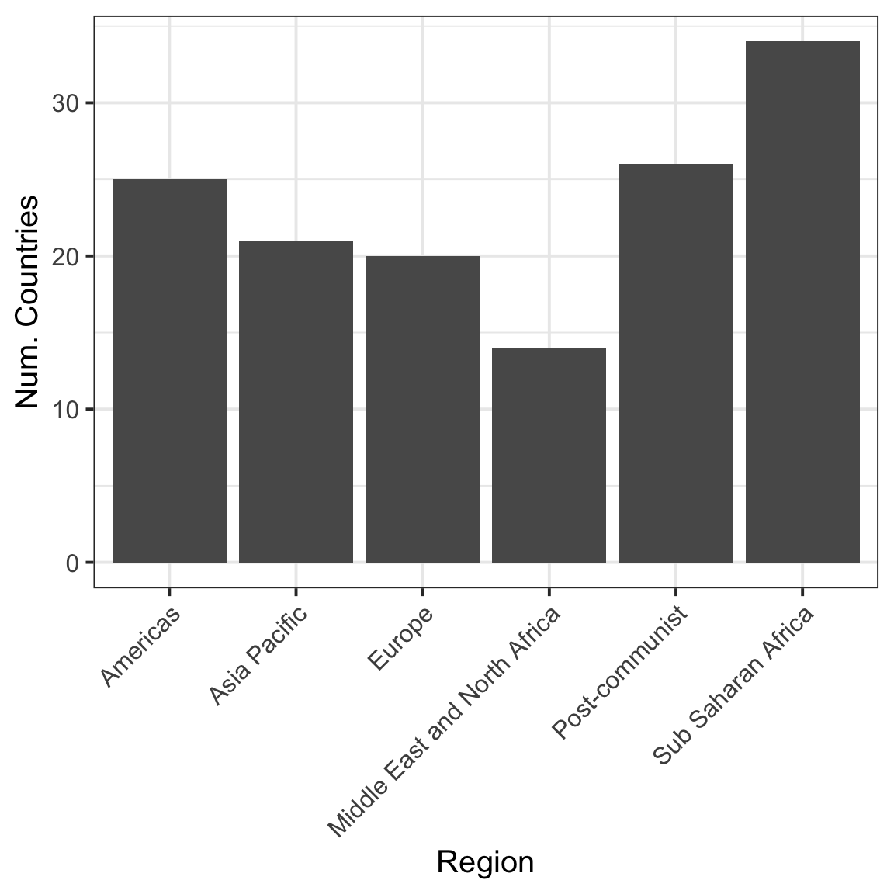
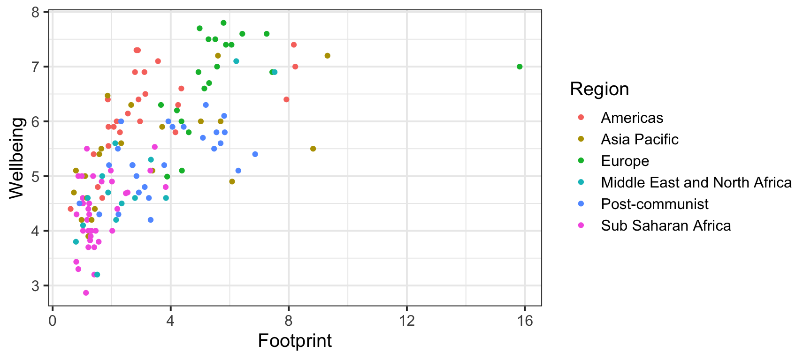
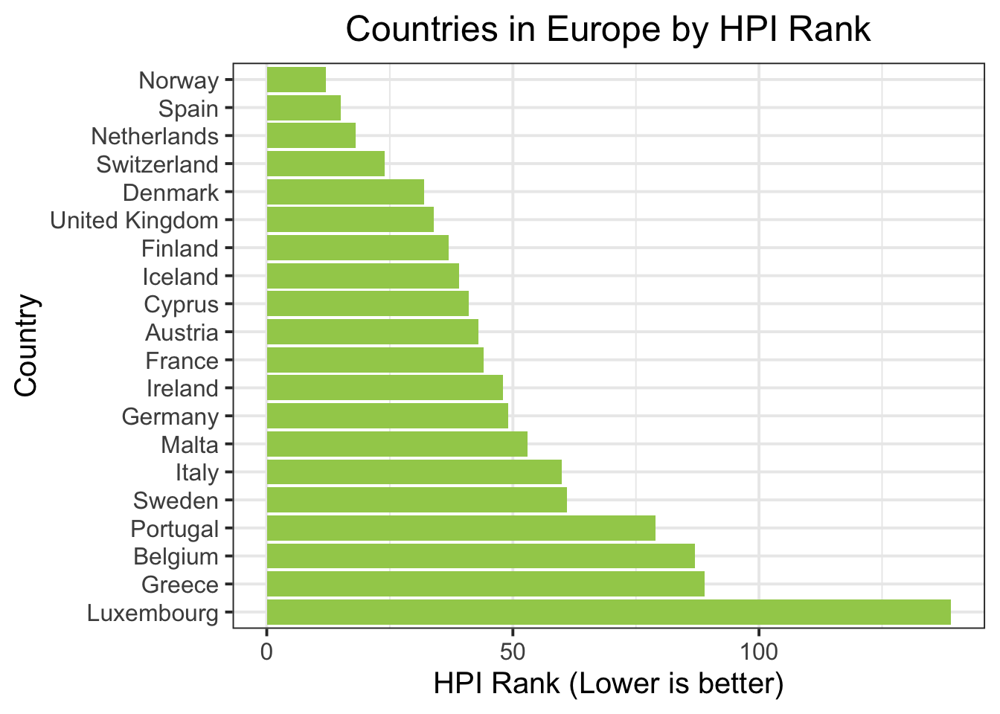
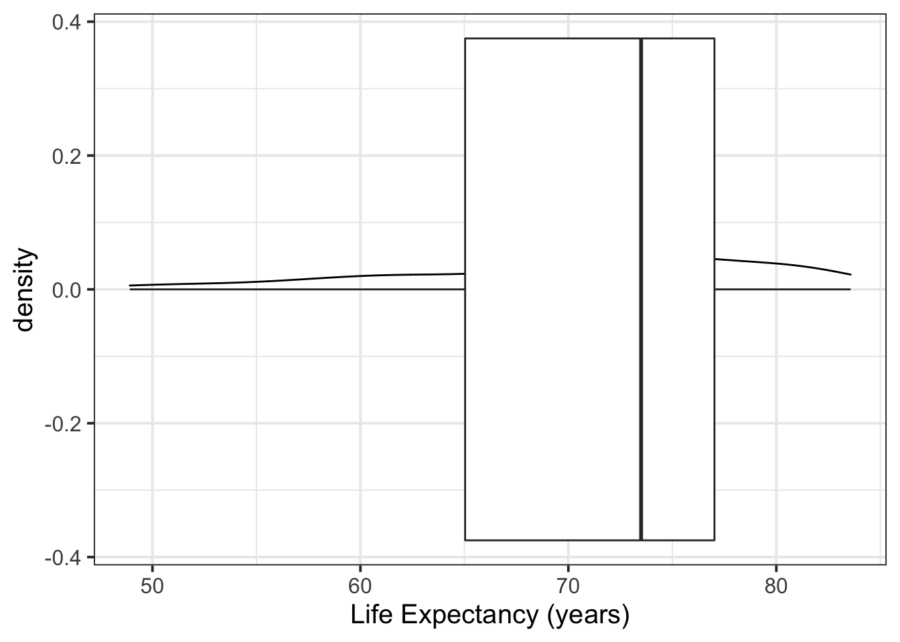
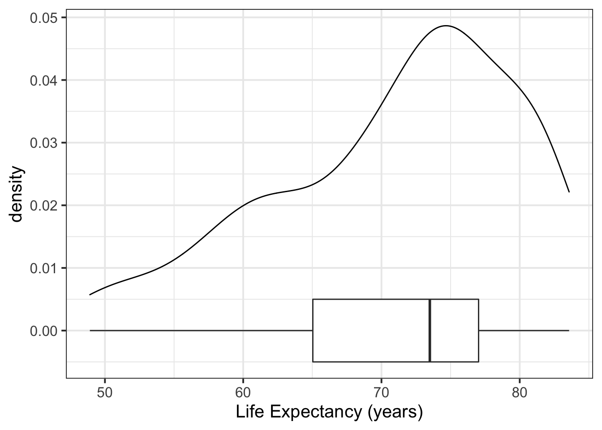
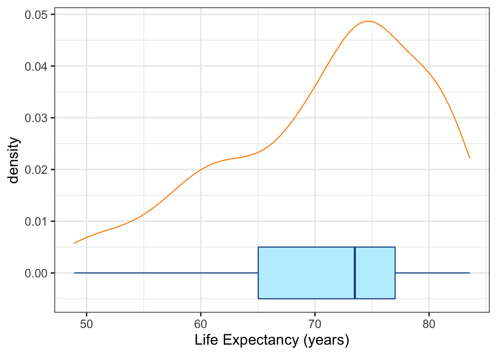
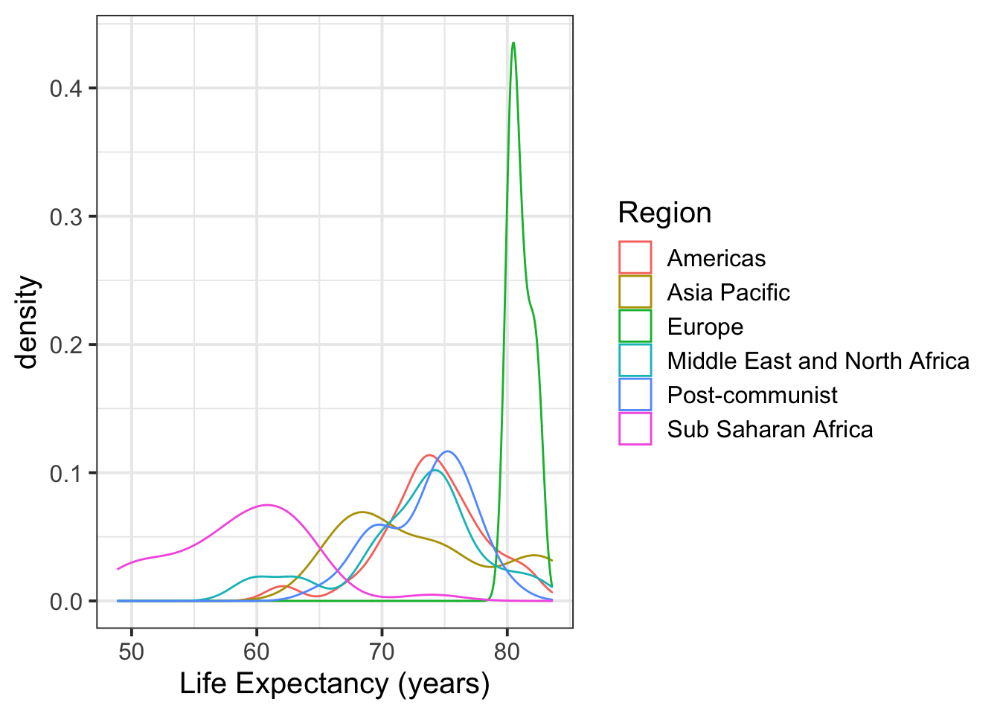

Introduction to tidyverse
LEARNING OBJECTIVES
- Understand what is tidyverse and why it is used
- Understand the link between data frames and tibbles
- Be able to read data into tibbles and manipulate them
- Be able to create grammar-of-graphics plots
What is tidyverse?
If you took RMS1, you are already familiar with data and data frames. If not, a data frame is a data structure used to store data organised in rows and columns.
Each row corresponds to an observational unit or case. Each column represents a variable, obtained by recording a particular attribute of the cases.
Figure 1: Illustration of a data frame structure.
The variables need not be all of the same type. Some could be numeric, other categorical.1 However, the main features of a data set are two:
- The columns need to all have the same length, i.e. the same number of cases;
- Each column should have values of the same type.
Point (1) makes sure that we know who each value refers to. Each row in the data frame should refer to the same case or individual. Point (2), instead, means that you can not have Age = 53, “Apricot”, 20, “Kiwi”. This would make it confusing, and perhaps “Apricot” and “Kiwi” refer to the favourite fruit of each individual.
In RMS1 you worked with the data.frame() function, used $ to select columns, and [rows, columns] for indexing.
As data becomes messier and bigger, some R users created a new data frame, called tibble, that comes with handy features such as pretty printing, automatic display of dimensions (# of rows and # of columns), and also automatic display of the type of each variable under its name.
The work has then been extended to create many useful functions that let you easily subset, transform, and work with tibbles/data frames. All of these new functions have been made available via many packages. However, instead of loading each package separately, RStudio has created a “bundle” package that loads them all at once for us: the tidyverse.
Getting started
Before using the functions provided by the tidyverse library, we need to install it.

Figure 2: Source: https://twitter.com/visnut/status/1248087845589274624
Run, once for all, the following code to install the tidyverse library:
install.packages('tidyverse')Once installed, load it via
library(tidyverse)Some messages will appear into the R console, but these are not worrying.
The pipe operator
The tidyverse package provides the function %>%, called the pipe function, which comes from the tidyverse sub-package magrittr and is automatically imported when you do library(tidyverse).

The pipe function makes it easier to write lengthy code in a natural left-to-right reading style.
Consider this code chunk:
head(round(log(1:10), 2))## [1] 0.00 0.69 1.10 1.39 1.61 1.79and the following equivalent one:
1:10 %>%
log() %>%
round(digits = 2) %>%
head()## [1] 0.00 0.69 1.10 1.39 1.61 1.79The pipe operator, %>%, simply takes the result of the operation on its left, and puts it into the first argument of the function to its right.
The first %>% takes the output of 1:10 and plugs it into log(). The second pipe takes the output of log() and plugs it into the first position (indicated by a dot) of round(., digits = 2). The final pipe takes the output of round(., digits = 2) and plugs it into head(), returning only the first six elements out of the ten provided.
Data
We will be working with data collected by the Happy Planet Index website, which maintains a ranking of global countries by their index of sustainable wellbeing. This index is computed from different variables such as wellbeing, life expectancy, inequality, and ecological footprint.
The tidyverse equivalent of a data frame is a tibble.
If you read data into R using functions from the tidyverse packages, a tibble is automatically created.
If, instead, you create the data yourself or use an older function such as read.table(), you need to use either tibble() or as_tibble() to convert it to a tibble.
To load the data file into R, we first need to check what type of data file it is.
If you downloaded the data, you will see that the file is called ‘HappyPlanet.csv’, meaning that the file is in comma separated values (csv) format.
Most tidyverse functions use underscores (_) to separate words. The appropriate one to read a csv file is read_csv().
First, check its help page:
?read_csvThe usage section says:
read_csv(file, col_names = TRUE, col_types = NULL,
locale = default_locale(), na = c("", "NA"), quoted_na = TRUE,
quote = "\"", comment = "", trim_ws = TRUE, skip = 0,
n_max = Inf, guess_max = min(1000, n_max),
progress = show_progress(), skip_empty_rows = TRUE)And the Arguments section says:
file:
Either a path to a file, a connection, or literal data (either a single string or a raw vector).
Files ending in .gz, .bz2, .xz, or .zip will be automatically uncompressed. Files starting with http://, https://, ftp://, or ftps:// will be automatically downloaded. Remote gz files can also be automatically downloaded and decompressed.Hence, we will provide either the path to the file (i.e. the address of the file on your PC), if you have downloaded it, or the URL address of the file on the web.
hp <- read_csv(file = 'https://uoepsy.github.io/data/HappyPlanet.csv')
hp## # A tibble: 140 x 14
## country region life_expectancy wellbeing happy_life_years footprint
## <chr> <chr> <dbl> <dbl> <dbl> <dbl>
## 1 Afghan… Middl… 59.7 3.8 12.4 0.79
## 2 Albania Post-… 77.3 5.5 34.4 2.21
## 3 Algeria Middl… 74.3 5.6 30.5 2.12
## 4 Argent… Ameri… 75.9 6.5 40.2 3.14
## 5 Armenia Post-… 74.4 4.3 24.0 2.23
## 6 Austra… Asia … 82.1 7.2 53.1 9.31
## 7 Austria Europe 81.0 7.4 54.4 6.06
## 8 Bangla… Asia … 70.8 4.7 23.3 0.72
## 9 Belarus Post-… 70.9 5.7 34.0 5.09
## 10 Belgium Europe 80.4 6.9 49.5 7.44
## # … with 130 more rows, and 8 more variables: inequality_of_outcomes <dbl>,
## # inequality_adjusted_life_expectancy <dbl>,
## # inequality_adjusted_wellbeing <dbl>, happy_planet_index <dbl>,
## # gdp_per_capita <dbl>, population <dbl>, gini_index <chr>, hpi_rank <dbl>As you can see, the data have 140 countries and 14 variables recorded, including the country name.
To check the names of the variables that have been recorded we can type
names(hp)## [1] "country" "region"
## [3] "life_expectancy" "wellbeing"
## [5] "happy_life_years" "footprint"
## [7] "inequality_of_outcomes" "inequality_adjusted_life_expectancy"
## [9] "inequality_adjusted_wellbeing" "happy_planet_index"
## [11] "gdp_per_capita" "population"
## [13] "gini_index" "hpi_rank"So, for each country, they have recorded country name, which “region” it is part of, life expectancy of the country, wellbeing index, and so on.
Manipulating data
To select some specific variables, rather than working with the full 14 attributes, you use the select() function. Let’s select the name and population of each country:
hp %>%
select(country, population)## # A tibble: 140 x 2
## country population
## <chr> <dbl>
## 1 Afghanistan 29726803
## 2 Albania 2900489
## 3 Algeria 37439427
## 4 Argentina 42095224
## 5 Armenia 2978339
## 6 Australia 22728254
## 7 Austria 8429991
## 8 Bangladesh 155257387
## 9 Belarus 9464000
## 10 Belgium 11128246
## # … with 130 more rowsTo select all character variables, you can use the select(where(is_character)) function. Let’s check which variables are categorical:
hp %>%
select(where(is_character))## # A tibble: 140 x 3
## country region gini_index
## <chr> <chr> <chr>
## 1 Afghanistan Middle East and North Africa Data unavailable
## 2 Albania Post-communist 28.96
## 3 Algeria Middle East and North Africa Data unavailable
## 4 Argentina Americas 42.49
## 5 Armenia Post-communist 30.48
## 6 Australia Asia Pacific Data unavailable
## 7 Austria Europe 30.48
## 8 Bangladesh Asia Pacific Data unavailable
## 9 Belarus Post-communist 26.01
## 10 Belgium Europe 27.59
## # … with 130 more rowsSo this returns 3 variables out of the 14 ones: country, region and gini_index. But wait, gini_index stores numbers, and the letters come from the fact that are many missing values, which have been encoded as ‘Data unavailable’.
Let’s fix that by reading the data again into R, and saying that the Not Available (NA) data have been encoded as ‘Data unavailable’ via the flag na = 'Data unavailable':
hp <- read_csv(file = 'https://uoepsy.github.io/data/HappyPlanet.csv',
na = 'Data unavailable')
hp## # A tibble: 140 x 14
## country region life_expectancy wellbeing happy_life_years footprint
## <chr> <chr> <dbl> <dbl> <dbl> <dbl>
## 1 Afghan… Middl… 59.7 3.8 12.4 0.79
## 2 Albania Post-… 77.3 5.5 34.4 2.21
## 3 Algeria Middl… 74.3 5.6 30.5 2.12
## 4 Argent… Ameri… 75.9 6.5 40.2 3.14
## 5 Armenia Post-… 74.4 4.3 24.0 2.23
## 6 Austra… Asia … 82.1 7.2 53.1 9.31
## 7 Austria Europe 81.0 7.4 54.4 6.06
## 8 Bangla… Asia … 70.8 4.7 23.3 0.72
## 9 Belarus Post-… 70.9 5.7 34.0 5.09
## 10 Belgium Europe 80.4 6.9 49.5 7.44
## # … with 130 more rows, and 8 more variables: inequality_of_outcomes <dbl>,
## # inequality_adjusted_life_expectancy <dbl>,
## # inequality_adjusted_wellbeing <dbl>, happy_planet_index <dbl>,
## # gdp_per_capita <dbl>, population <dbl>, gini_index <dbl>, hpi_rank <dbl>To filter the tibble and only visualise the rows corresponding to countries in Europe:
hp %>%
filter(region == 'Europe')## # A tibble: 20 x 14
## country region life_expectancy wellbeing happy_life_years footprint
## <chr> <chr> <dbl> <dbl> <dbl> <dbl>
## 1 Austria Europe 81.0 7.4 54.4 6.06
## 2 Belgium Europe 80.4 6.9 49.5 7.44
## 3 Cyprus Europe 79.8 6.2 42.3 4.21
## 4 Denmark Europe 79.8 7.5 54.4 5.51
## 5 Finland Europe 80.4 7.4 54.6 5.87
## 6 France Europe 81.8 6.6 48.1 5.14
## 7 Germany Europe 80.6 6.7 48.2 5.3
## 8 Greece Europe 80.5 5.1 33.3 4.38
## 9 Iceland Europe 82.2 7.6 58.0 6.43
## 10 Ireland Europe 80.5 7 50.3 5.57
## 11 Italy Europe 82.7 5.8 41.1 4.61
## 12 Luxemb… Europe 81.1 7 51.7 15.8
## 13 Malta Europe 80.2 6 40.8 4.36
## 14 Nether… Europe 81.2 7.5 57.0 5.28
## 15 Norway Europe 81.3 7.7 57.1 4.98
## 16 Portug… Europe 80.3 4.99 32.3 3.88
## 17 Spain Europe 82.2 6.3 45.3 3.67
## 18 Sweden Europe 81.8 7.6 57.4 7.25
## 19 Switze… Europe 82.6 7.8 59.3 5.79
## 20 United… Europe 80.4 6.9 49.1 4.94
## # … with 8 more variables: inequality_of_outcomes <dbl>,
## # inequality_adjusted_life_expectancy <dbl>,
## # inequality_adjusted_wellbeing <dbl>, happy_planet_index <dbl>,
## # gdp_per_capita <dbl>, population <dbl>, gini_index <dbl>, hpi_rank <dbl>To both filter and select some columns:
hp %>%
select(country, region, population) %>%
filter(region == 'Europe')## # A tibble: 20 x 3
## country region population
## <chr> <chr> <dbl>
## 1 Austria Europe 8429991
## 2 Belgium Europe 11128246
## 3 Cyprus Europe 1129303
## 4 Denmark Europe 5591572
## 5 Finland Europe 5413971
## 6 France Europe 65639975
## 7 Germany Europe 80425823
## 8 Greece Europe 11045011
## 9 Iceland Europe 320716
## 10 Ireland Europe 4586897
## 11 Italy Europe 59539717
## 12 Luxembourg Europe 530946
## 13 Malta Europe 419455
## 14 Netherlands Europe 16754962
## 15 Norway Europe 5018573
## 16 Portugal Europe 10514844
## 17 Spain Europe 46773055
## 18 Sweden Europe 9519374
## 19 Switzerland Europe 7996861
## 20 United Kingdom Europe 63700300or, equivalently:
hp %>%
filter(region == 'Europe') %>%
select(region, country, population)## # A tibble: 20 x 3
## region country population
## <chr> <chr> <dbl>
## 1 Europe Austria 8429991
## 2 Europe Belgium 11128246
## 3 Europe Cyprus 1129303
## 4 Europe Denmark 5591572
## 5 Europe Finland 5413971
## 6 Europe France 65639975
## 7 Europe Germany 80425823
## 8 Europe Greece 11045011
## 9 Europe Iceland 320716
## 10 Europe Ireland 4586897
## 11 Europe Italy 59539717
## 12 Europe Luxembourg 530946
## 13 Europe Malta 419455
## 14 Europe Netherlands 16754962
## 15 Europe Norway 5018573
## 16 Europe Portugal 10514844
## 17 Europe Spain 46773055
## 18 Europe Sweden 9519374
## 19 Europe Switzerland 7996861
## 20 Europe United Kingdom 63700300Let’s only work with a subset of the variables by overwriting the original data. You can either specify the variables to keep:
hp <- hp %>%
select(country, region, life_expectancy, wellbeing, footprint,
happy_planet_index, gdp_per_capita, population, hpi_rank)or specify those to be dropped by adding a minus before the name:
hp <- hp %>%
select(-happy_life_years, -inequality_of_outcomes,
-inequality_adjusted_life_expectancy,
-inequality_adjusted_wellbeing,
-gini_index)Check the new dimensions of the data:
dim(hp)## [1] 140 9To modify the data frame and add a new column, or modify an existing one, we use the mutate function.
Let’s create a new variable called squared_hpi which is simply computed as the squared happy_planet_index:
hp <- hp %>%
mutate(squared_hpi = happy_planet_index^2)Say you want to compute the average ecological footprint (global hectares/person) of the countries in the world.
Effectively, we are summarising the data, so the function is summarize() or summarise():
hp %>%
summarize(avg_footprint = mean(footprint))## # A tibble: 1 x 1
## avg_footprint
## <dbl>
## 1 3.26To compute both the mean and standard deviation, we would do:
hp %>%
summarize(avg_footprint = mean(footprint),
sd_footprint = sd(footprint))## # A tibble: 1 x 2
## avg_footprint sd_footprint
## <dbl> <dbl>
## 1 3.26 2.30Say, instead, that you wish to compute the number of countries in each region. This means that we are computing a summary (number of countries) within each region. So it’s a grouped computation.
hp %>%
group_by(region) %>%
summarize(count = n())## # A tibble: 6 x 2
## region count
## <chr> <int>
## 1 Americas 25
## 2 Asia Pacific 21
## 3 Europe 20
## 4 Middle East and North Africa 14
## 5 Post-communist 26
## 6 Sub Saharan Africa 34The function group_by() tells R to perform the later computations within groups, where the groups are specified by the categorical variable in group_by(). Next, the summarize function tells R to compute a summary of the data — in our case, to count the rows, and this is done by the function n().
To sort a tibble in ascending order according to the values of a particular variable, use the function arrange(<variable name>).
To sort in descending order, use arrange(desc(<variable name>)).
Compute the average ecological footprint (global hectares/person) of each region and sort the table in descending order.
Plots
Tidyverse provides also a very sophisticated and customisable plotting package called ggplot2. Why 2? Because it’s the second version of the package. Why gg? Because it follows the grammar of graphics. The grammar of graphics states that each plot is made of different layers which are “added” on top of each other:
- Data: which data to use for the plot
- Aesthetics: which variables affect the plot. What gives the x-axis position? What gives the y-axis position? What gives the color?
- Geometric objects: What kind of geometric shapes should I plot? A line? Points? Bars?
- Optional elements such as theme properties (rotate labels), create panels for each group, and more.
The code we will write will look similar to the following lines. However, the code below will not run in R. It is rather meant to be an explanation of what each layer does.
ggplot(<data>) +
geom_1(<aesthetics 1>, <options>) +
geom_2(<aesthetics 2>, <options>) +
labels() +
theme_options()Let’s try this out by creating a barplot of the regions. This will show how many times each region appears in the data frame. Hence, since the cases are the countries, it will show how many countries are in each region.
The data is the most important layer and tells ggplot where to find the data for the plot:
ggplot(hp)To create a barplot of the regions, we can use geom_bar(). This function will automatically count how many times each region appears in the data and plot the count vs the region names.
ggplot(hp) +
geom_bar(aes(x = region))
It’s quite hard to read. Let’s flip the two axes and add some labels.
ggplot(hp) +
geom_bar(aes(x = region)) +
labs(x = 'Region', y = 'Num. Countries') +
coord_flip()
Otherwise, you could have googled how to rotate the x-axis labels - it’s quite hard to remember.
Google ‘rotate x-axis labels ggplot2’ and you will find that the line to add is theme(axis.text.x = element_text(angle = 90, vjust = 0.5, hjust=1)). However, I don’t want them vertical, but I only want to rotate them by 45 degrees. Try experimenting with the code, it won’t destroy your laptop!
ggplot(hp) +
geom_bar(aes(x = region)) +
labs(x = 'Region', y = 'Num. Countries') +
theme(axis.text.x = element_text(angle = 45, vjust = 1, hjust=1))
Next, let’s plot the wellbeing vs footprint for each country as points on a graph, and color each point by the region:
ggplot(hp) +
geom_point(aes(x = footprint, y = wellbeing, color = region)) +
labs(x = 'Footprint', y = 'Wellbeing', color = 'Region')
Let’s now plot more categorical variables. We will create a barplot of the countries in Europe, ordered by their HPI (Happy Planet Index) ranking.
Because the HPI rank is already computed in the dataset, we don’t need to use geom_bar(), but we will use geom_col() which creates columns of different heights according to a variable — in our case, hpi_rank.
rank_data <- hp %>%
filter(region == 'Europe') %>%
mutate(
country = fct_reorder(country, hpi_rank, .desc = TRUE)
)
ggplot(rank_data) +
geom_col(aes(x = hpi_rank, y = country), fill = 'darkolivegreen3') +
labs(x = 'HPI Rank (Lower is better)', y = 'Country',
title = 'Countries in Europe by HPI Rank')
The following code creates a density plot of life expectancy scores and a boxplot of the life expectancy scores to inspect for outliers.
ggplot(hp) +
geom_density(aes(x = life_expectancy)) +
geom_boxplot(aes(x = life_expectancy)) +
labs(x = 'Life Expectancy (years)')
The automatic boxplot width appears to be too big. We can specify the boxplot width by including a fixed aesthetic, as it does not depend on the data, outside of the aes() function:
ggplot(hp) +
geom_density(aes(x = life_expectancy)) +
geom_boxplot(aes(x = life_expectancy), width = 0.01) +
labs(x = 'Life Expectancy (years)')
If you are using multiple geometric objects that share the same aesthetics, you can specify them once for all in the first function ggplot() rather than inside each geom_ function:
ggplot(hp, aes(x = life_expectancy)) +
geom_density() +
geom_boxplot(width = 0.01) +
labs(x = 'Life Expectancy (years)')To add colours to each geometric object we can write:
ggplot(hp, aes(x = life_expectancy)) +
geom_density(color = 'darkorange') +
geom_boxplot(width = 0.01, color = 'dodgerblue4', fill = 'lightblue1') +
labs(x = 'Life Expectancy (years)')
The color = and fill = properties are other examples of fixed aesthetics as they are specified outside of the aesthetics function aes().
If, instead, you wanted data-dependent aesthetics, i.e. aesthetics that change with the data, you would add them inside of aes(). For example, to colour the densities by region, you would do:
ggplot(hp, aes(x = life_expectancy, color = region)) +
geom_density() +
labs(x = 'Life Expectancy (years)', color = 'Region')
Summary
You have learned about several new functions:
tibble(): the tidyverse equivalent ofdata.frame()select(): extracts columnsfilter(): subsets cases based on conditionsmutate(): creates new variables or overwrites an existing onegroup_by(): groups related rows togethersummarise()/summarize(): reduces values down to a single summaryggplot(): starts a grammar of graphics plot, and is followed by different geometries
Numeric variables are data for which standard arithmetic operations, like addition and taking the mean, make sense. Categorical variables are data telling us which category/group each case belongs to. In R, these are encoded as a
factor().↩︎